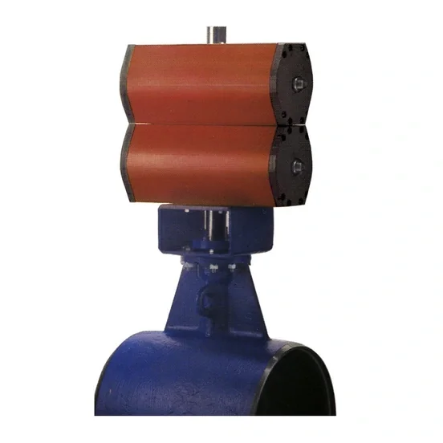

Tự động hóa đóng/mở và điều tiết van trong lọc dầu, hóa chất, xử lý khí.
ROTORK · RC200 RANGE
RC88 Rotork
RC88 are compact pneumatic part-turn scotch yoke actuators with high torque output for on-off and modulating applications. The robust and efficient design results in high reliability and low air consumption. Available in double-acting or single-acting with spring-return configurations.Contact Us

Ảnh sản phẩm chính thứcTỔNG QUAN MÃ RC88
RC88 – Đầu ra part-turn (xoay 1/4 vòng)
RC88 are compact pneumatic part-turn scotch yoke actuators with high torque output for on-off and modulating applications. The robust and efficient design results in high reliability and low air consumption. Available in double-acting or single-acting with spring-return configurations.Contact Us
RC88 thuộc range RC200 của Rotork, dùng cho tự động hóa và điều tiết van công nghiệp. Fast Group Engineering — đơn vị phân phối Rotork chính hãng tại Việt Nam — cung cấp RC88 là hàng chính hãng, xuất xứ châu Âu, đầy đủ CO/CQ kèm hỗ trợ kỹ thuật lựa chọn cấu hình và báo giá.
Lưu ý mã hàng
Chưa có mã đặt hàng hoàn chỉnh từ nguồn chính thức; không dùng model_code thay cho part number.
XUẤT XỨ & CHỨNG TỪ
RC88 — hàng chính hãng, xuất xứ châu Âu, đầy đủ CO/CQ
Thương hiệuRotork · Anh Quốc / Châu Âu
Chứng từCO + CQ theo từng lô
Nhà phân phốiFast Group Engineering · VN
RC88 do Fast Group Engineering — đơn vị phân phối Rotork chính hãng tại Việt Nam — cung cấp là hàng chính hãng thương hiệu Rotork (trụ sở tại Anh Quốc, châu Âu). Mỗi lô RC88 đi kèm chứng nhận xuất xứ (CO) và chứng nhận chất lượng (CQ); xuất xứ cụ thể được xác nhận trên CO theo từng lô. Chúng tôi không suy đoán part number và đối chiếu cấu hình theo dữ liệu chính thức Rotork trước khi báo giá.
THÔNG SỐ ĐỊNH HƯỚNG
Đặc điểm kỹ thuật chính
Các giá trị mô tả phạm vi model. Datasheet của cấu hình được chọn là căn cứ cuối cùng.
01Double-acting or single-acting with spring-return
02For on/off and modulating applications
03High reliability, long life, three-year warranty
04High efficiency, low air consumption
05Pre-tensioned springs for safety
06Connection accessories according to VDI/VDE3845 NAMUR
07Scotch yoke design gives high torque in the end positions
08Housing in anodised aluminium
09-20 to +80 °C (-4 to +176 ºF)
10Options:
11Manual override
12RCT extra corrosion protection
ỨNG DỤNG
Ứng dụng tiêu biểu của RC88
RC88 are compact pneumatic part-turn scotch yoke actuators with high torque output for on-off and modulating applications.
Điều khiển van trong nhà máy điện, xử lý nước, khử mặn và cấp thoát nước.
Tích hợp điều khiển van cho nhà máy process, tự động hóa và giám sát.
RC88 (đầu ra part-turn (xoay 1/4 vòng)) được chọn theo kiểu van, dải mô-men/thrust, nguồn điện và enclosure của dự án.
TÀI LIỆU KỸ THUẬT
Tài liệu kỹ thuật RC88
LoạiMã tài liệuTên tài liệuTải
CertificatePUB065-009PUB065-009 - RC88 - Type Approval Certificate Offshore Standard DNV-OS-D101 - English↓ EnglishCertificatePUB065-010PUB065-010 - RC200 - Certificate of Conformance RC200 Arctic actuators - English↓ EnglishCertificatePUB065-011PUB065-011 - RC88 - ATEX Declaration of Conformity - English↓ EnglishCertificatePUB065-012PUB065-012 - RC88 - PED Declaration of Conformity - English↓ EnglishCertificatePUB065-040PUB065-040 - SIL RC-Series Double Acting Pneumatic IEC 61508 Part 1-7:2010 - English↓ English
Cần thêm tài liệu (datasheet cấu hình, drawing, certificate, wiring diagram…)? Liên hệ Fast Group để nhận đúng theo cấu hình đơn hàng.
HỎI & ĐÁP
Câu hỏi thường gặp về RC88
Chính hãng, xuất xứ, CO/CQ, tài liệu và báo giá — những điều khách hàng thường hỏi.
RC88 là sản phẩm Rotork loại nào và dùng cho ứng dụng gì?
RC88 là bộ truyền động (đầu ra part-turn (xoay 1/4 vòng)) thuộc range RC200 của Rotork, dùng cho tự động hóa và điều tiết van công nghiệp. RC88 are compact pneumatic part-turn scotch yoke actuators with high torque output for on-off and modulating applications.
RC88 khác gì các mã còn lại trong range RC200?
Trong range RC200, RC88 có đầu ra part-turn (xoay 1/4 vòng). Các mã còn lại gồm: RC200 (cấu hình khác). Việc chọn mã phụ thuộc kiểu van, dải làm việc và yêu cầu kỹ thuật — Fast Group hỗ trợ chọn đúng mã theo dữ liệu dự án.
RC88 Fast Group cung cấp có phải Rotork chính hãng, xuất xứ châu Âu không?
Đúng. RC88 là hàng chính hãng thương hiệu Rotork (trụ sở Anh Quốc, châu Âu), do Fast Group Engineering — nhà phân phối Rotork chính hãng tại Việt Nam — cung cấp. Xuất xứ được xác nhận trên CO theo lô.
Mua RC88 có đầy đủ CO/CQ không?
Có. Mỗi lô RC88 kèm CO (chứng nhận xuất xứ) và CQ (chứng nhận chất lượng), phục vụ hồ sơ nghiệm thu và đấu thầu của nhà máy, dự án.
Tài liệu kỹ thuật của RC88 gồm những gì?
RC88 có sẵn tài liệu từ nguồn chính thức Rotork: Certificate. Fast Group gửi kèm tài liệu phù hợp khi báo giá và hỗ trợ đối chiếu revision.
Cần cung cấp thông tin gì để báo giá RC88 nhanh nhất?
Gửi cho Fast Group: mã RC88 (hoặc ảnh nameplate), số lượng, thời gian cần hàng, điều kiện vận hành và yêu cầu chứng từ (CO/CQ). Chúng tôi phản hồi giá và lead time.
KIẾN THỨC LIÊN QUAN
Xem thư viện →Đọc thêm để chọn đúng cấu hình
 01
01
Cách đọc nameplate Rotork tại Việt Nam | Fast Group Engineering
Khi cần báo giá hoặc thay thế actuator Rotork, việc đầu tiên không phải là tìm mã tương đương trên mạng mà là đọc đúng nameplate trên thiết bị. Nameplate chứa manufacturer, range/model, order code (part number) và serial number — bốn lớp dữ liệu dễ bị nhầm lẫn
Đọc bài viết → 02
02
Part number Rotork là gì? Phân biệt part number, model, range
Truy vấn "part number Rotork" thường xuất phát từ một tình huống cụ thể: cần báo giá thiết bị thay thế nhưng chỉ có một chuỗi ký tự chưa rõ là model hay part number đầy đủ. Nhầm hai khái niệm này khiến báo giá sai cấu hình hoặc chậm tiến độ vì phải hỏi lại nhi
Đọc bài viết → 03
03
Mua actuator Rotork chính hãng tại Việt Nam: checklist đặt hàng
Rủi ro lớn nhất khi mua actuator không phải là giá, mà là chọn sai cấu hình rồi phát hiện sau khi hàng đã về công trường. Actuator Rotork có nhiều range (IQ3 Pro, IQT3 Pro, CK, CMA, Skilmatic SI...) với cách chọn khác nhau theo loại chuyển động, tải trọng và m
Đọc bài viết →MODEL LIÊN QUAN
Xem toàn bộ RC200 →Tiếp tục so sánh trong range
RC88 · REQUEST FOR QUOTATION
Gửi RFQ RC88 →
Cần báo giá RC88 chính hãng kèm CO/CQ?
Gửi nameplate, dữ liệu van và điều kiện vận hành cho Fast Group Engineering.